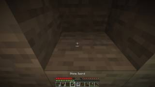
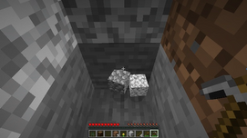
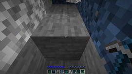

Multimodal Filesystem Memory for Long-Horizon Embodied Agents
1Harvard 2Kempner Institute 3NYU 4UIUC 5NEU 6MIT*Co-lead
IWhy long games need memory
We give an LLM a Minecraft world. It sees the world only as first-person frames and plays in turns: each turn it looks at the newest frame and writes a short list of actions, which the environment then executes. In the Ender Dragon task it has a budget of 36,000 steps, about half an hour of game time, to work through 24 milestones, from the first log to the dragon. Most of what makes this hard comes down to memory.
What it needs is out of view
The agent walks past an iron vein early on and needs it thousands of steps later, long after the vein has left the screen and the model's context.
Mistakes compound
Each milestone builds on the ones before. Dying in lava loses everything it carries, and the same lake will kill again unless the agent remembers it.
Skills are learned in play
No one gives it a procedure for tunneling or for fighting a blaze. It has to notice what worked and save it in a form it can reuse, in this life and the next.
Without memory, all three models we tried stall at about six of the 24 milestones. So the question is what to keep from such a long game, and how the agent can find it again when it matters.
IIHow agents remember
Agent memory has gone through a few designs. We compare them on one question from our runs: in its first life, the agent finds an iron vein deep underground, and tens of thousands of steps later, in its next life, it needs iron again. Where was the vein?
-
1
Context window
The model reads the recent past straight from its prompt.
KeepsThe last few frames and messages.
Finds things byReading its prompt.
LosesEverything older than the window.
The iron veinGone. It left the window tens of thousands of steps ago.
-
2
Text memory
The agent writes notes, summaries or a log, and searches them by keyword or similarity.
KeepsWhat the agent put into words.
Finds things bySearching the text.
LosesWhat it didn't write down, and what anything looked like.
The iron veinIts coordinates, if it wrote them down, but not what the way in looks like.
-
3
Frame memory
Every frame is kept, so the agent can look at it again.
KeepsEverything it saw.
Finds things byTurn or frame number.
LosesNot the frames but the way back to them: it has to know when it saw the thing.
The iron veinIn there, somewhere among thousands of frames.
-
4
Multimodal filesystem memory
MFM files each frame it records under cues and keeps what the agent learns next to it.
KeepsThe frame, state and outcome of every action, indexed by when, where and what happened, plus the agent's own facts, procedures and plan.
Finds things byA query on the cues, then a look at the frames.
LosesNothing it recorded. Its notes can be wrong, so each one cites the episodes it came from.
The iron veinAsk for the place, open the frame, set it beside the live view.
Text is easy to search but loses what things looked like; raw frames keep everything but are hard to search. In MFM we keep the frames and put a small text index on top of them, so a short query leads back to the full picture, and the agent files what it learns next to that evidence. Then, we follow our agent back to the iron vein.
IIIHow MFM works
We store the agent's memory as plain files in its workspace, sorted into the five kinds of
memory in Figure 2 of our paper. The harness, the program that runs the environment for the
agent, writes two of them as the agent plays: episodic memory, one episode per action
with its frame, state and outcome and a row of cues in index.jsonl; and
spatial memory, a grid of where the agent has been. The agent writes the other three
itself: semantic notes, procedures it can call as actions, and a
working plan. It reads all five with ordinary shell commands during its turn, and the
whole directory passes on to its next life.
The figure below replays about 160 steps of one run, the second life of a GPT-6-Astra agent on Ender Dragon. The agent digs down to the iron vein its first life found and mines it at step 8,992; its first life did not reach iron until step 18,231. Every frame, command and file line in the figure comes from the run's record. Stages 1 to 4 make up one turn and repeat; stage 5 comes when a life ends. The figure plays by itself, or click a stage to watch just that part.
Environment Minecraft

statex −2953.4 y 18 z −5605.4
every step
Memory filesystem ./
Written by the harness every step, never edited
episodes/ · index.jsonlgrid.jsonlWritten by the agent read every turn, revised as it learns
mine/GUIDE.mdmine/procedures/mine/working.mdprevious/life_1/ · 3,035 episodes
evidence
turn
Agent GPT-6-Astra
It searches its memory, looks at the frames it finds, writes down what it learns, and plans its next actions.
Each turn goes through four stages: the harness records what happened, and the agent retrieves, consolidates and acts. When a life ends, the memory carries over to the next life.
Open step 8,963 in the explorerThe paper's Figure 2, with the files of each kind of memory

In the explorer below you can step through whole runs, including this one.
IVExplore a run
We picked 2 of our runs and replay each one together with its memory. Press Play: the run's video plays on the right while the memory on the left fills up. Each box is one kind of memory, in the figure's colors. Click a box or a file to read it as it was at that step, and click it again to go back. The Ender Dragon run is the life from the figure above, which reached 16 of 24 milestones in 36,000 steps.
About this replay
We show the memory as the harness and the agent wrote it: the rows of
index.jsonl, the map, the log, and the notes in mine/. Pause or
move the step to look at any moment. A query runs over the memory as it stood then, with
the rules of the agent's own tool. Everything here is the record of one run, exported by
scripts/export_demo.py. Nothing is simulated and no model is called.
-
The index is a file, and the query is a filter. MFM computes no
embeddings and ranks nothing.
index.jsonlhas one row per closed episode, andtools/episodes.pyselects rows by step range, by distance from a point, by tag, by action, or by text found in the episode's files. Filters combine with AND, and results come back in the order they were recorded. -
The query box runs a port of that tool. It was checked against this
run: each
episodes.pycall the agent made was re-run over the index as it stood at that turn and compared, line for line, with the output the run recorded. - Replaying the harness's files is exact. The index, the grid and the log are append-only and every row carries its step, so the memory at step s is the rows written by step s.
-
The agent's own files are rebuilt from its patches. The run keeps
only the final
mine/files. Their history here comes from theapply_patchcalls in the session record, and is shown only when replaying those patches gives back the final file exactly. - The video is the run's own recording, one frame per step. The page takes its step from the frame on screen, so the memory on the left is always the memory at the moment the video shows.
- Frames are reduced. The stored frames are PNG; the page shows JPEG copies no larger than 320×180. Recorded command output is cut at 6,000 characters. Reference and skill files, and images the agent made, are listed and not included.
-
The tool differs between runs. Each run carries its own copy of
tools/episodes.py, and the query box accepts the flags of the copy the chosen run had. Where a run carried the memory of earlier lives, the export has the index of those lives and not their episode files, so--previousreturns their rows without the harness notes. - One run. Each entry in the list is a single recorded life. It shows how the memory is built and read, and says nothing about how often the agent succeeds.
Query the memory run the agent's own search tool over the memory at this step
--near
This run had no query tool, so the box is off. It is the flat-retrieval ablation:
the harness took away tools/episodes.py and the recall block of the prompt, and
the agent searched index.jsonl and the log with its own shell commands
(sed, rg, tail), which are in the Turn tab.
./
also
Written by the harness every step, never edited
Written by the agent read every turn, revised as it learns
VResults
We compare MFM with the same agent without memory (Direct) and with two recent memory systems for long-horizon agents, PRO-LONG and VISTA, each on three models. In Minecraft (MCU-AgentBeats), Mine Diamond from Scratch has 10 milestones in a budget of 12,000 steps, and Ender Dragon has 24 milestones in 36,000 steps. In CUABench-KiCad, the agent designs and edits circuits in a desktop app through screenshots, mouse and keyboard, and each task is scored from 0 to 1. We ran every setting with three seeds; bars show the mean and whiskers one standard deviation.
Table
| Model | Direct | PRO-LONG | VISTA | MFM |
|---|---|---|---|---|
| GPT-5.6-Sol | 4.0 ± 1.0 | 8.0 ± 1.0 | 9.3 ± 0.6 | 9.7 ± 0.6 |
| Claude Opus 5 | 6.0 ± 1.0 | 8.0 ± 1.0 | 8.7 ± 0.6 | 9.3 ± 0.6 |
| GPT-6-Astra | 6.3 ± 0.6 | 9.3 ± 0.6 | 9.7 ± 0.6 | 10.0 ± 0.0 |
Table
| Model | Direct | PRO-LONG | VISTA | MFM |
|---|---|---|---|---|
| GPT-5.6-Sol | 6.0 ± 1.0 | 8.3 ± 0.6 | 9.0 ± 1.0 | 10.7 ± 0.6 |
| Claude Opus 5 | 6.0 ± 1.0 | 8.0 ± 1.0 | 8.7 ± 0.6 | 13.3 ± 0.6 |
| GPT-6-Astra | 6.3 ± 0.6 | 11.0 ± 1.0 | 12.7 ± 0.6 | 15.0 ± 1.0 |
Table
| Model | Direct | PRO-LONG | VISTA | MFM |
|---|---|---|---|---|
| GPT-5.6-Sol | 0.240 ± 0.026 | 0.306 ± 0.014 | 0.400 ± 0.011 | 0.413 ± 0.009 |
| Claude Opus 5 | 0.240 ± 0.023 | 0.300 ± 0.016 | 0.373 ± 0.013 | 0.389 ± 0.010 |
| GPT-6-Astra | 0.267 ± 0.021 | 0.375 ± 0.012 | 0.400 ± 0.010 | 0.440 ± 0.013 |
MFM has the highest mean with every model on every task, and the gap is widest on Ender Dragon, the longest task. With GPT-6-Astra it reaches all 10 Mine Diamond milestones, and 15.0 of 24 on Ender Dragon, where the best baseline averages 12.7. On KiCad it averages 0.440 with GPT-6-Astra, against 0.400 for the best baseline and 0.267 without memory.
In the next two sections we look at where these gains come from: how the agent uses the frames it keeps, and the skills it writes for itself and carries from one life to the next.
VILooking back at past frames
The index leads the agent to the right episode, but what it checks is the frame. Our agents
often open past frames, from the current life and from earlier ones:
episodes.py --then-now puts a past frame beside the live view, and
zoom.py crops a frame for a closer look. Below, we marked five of these looks on
one life's milestone staircase. Point at a callout, or focus it, to enlarge its pair of frames
and read what the look changed.

(a) step 866

recordedthe hole it had dug, seen from its southern rim
retrieved18 steps later: it was straddling the rim; centring gave Y68 and dirt
Within a life. A move west had not taken the agent down into the hole it had dug. Its stored frame beside the live one showed it standing on the southern rim, so it shifted north. The next turn reads "Centering worked: Y68, two dirt collected".
(b) step 1,777


recordedthe cut that failed to open a level passage (ep_000126)
retrieved78 steps later: look_at had pitched wrong, so it switched to look_abs
(c) step 4,588


recordeda pale animal on the hillside ahead
retrieved, zoom cropzoomed: a wolf, not a sheep; did not attack, turned east for food
A closer look: a wolf. A pale animal on the hillside, and the crop the agent made of it: "The close-up shows a muzzle and tail: this is a wolf, not a sheep." It left the wolf alone.
(d) step 4,867

recordedlife 1’s shallow iron entrance (ep_000231)
retrieved1,271 steps later (step 6,138): the grass bank matched, so it dug in; iron ore at 6,565
Across lives. In another run in the same world, a later life set the live grass bank beside its first life's frame of the way into a shallow iron vein: "The recorded entrance matches the live bank." It dug in and mined iron 427 steps later.
(e) step 4,917


recordedan animal on the slope ahead
retrieved, zoom cropzoomed: a pink sheep, not a pig; killed for food, mutton for the descent
A closer look: a sheep. An animal on the slope ahead, and the crop of it: a pink sheep, not a pig. The agent killed it for food and kept the mutton for the way down.
Looking back tells the agent what is there. The same memory also holds what it has learned to do: skills it writes for itself and passes on to the next life.
VIISelf-improvement through skill learning
The model's weights never change, so an MFM agent can only get better through what it writes
down. Part of that is facts, such as where the iron is. The other part is skills: when a
sequence of actions has worked, the agent saves it as a script under
mine/procedures/ and from the next turn calls it like any built-in action. When a
life ends, we pass its records and these files on. This section follows the skills in three
steps: how one life writes them, what the next life in the same world gains from them, and
what happens when they are handed to an agent on a new task in a new world.
How a skill is written
We followed one chain of two lives with GPT-6-Astra on the Ender Dragon task; the second life is the one in the figure above and in the explorer.
Saved after it works
The agent writes a skill only after doing the thing by hand. Life 2 cleared a stone wall twice before keeping the method: "Save the clearing sequence after its second successful trial."
Guarded by its own checks
Each script first reads the game state and does nothing where it was not tested.
descend_one returns no actions unless the inventory screen is closed and the
camera is at pitch 60.
Inherited and revised
A later life starts with the earlier life's scripts, reads them, and drops what no longer
fits. Life 2 kept 20 of life 1's 21 procedures and retired level_step, the one
life 1 had called most, after tracing life 1's fall into lava to it.
The skills of one life
These are the 12 skills of the agent's own writing that life 2 called. Point at a skill, or focus it, to watch one of its calls from that life.
| Skill | What it does | Written | Calls in lives 1, 2 |
|---|---|---|---|
| clears an upper and a lower stone block while standing still, then inspects the floor | life 2, step 25,253 | —, 94 | |
| mines an upper and a lower block of a west wall and collects the drops | life 2, step 2,416 | —, 86 | |
| cuts one descending stair step and advances | life 2, step 5,249 | —, 61 | |
the same as quarry_west_pair, heading north | life 2, step 16,028 | —, 27 | |
| extends a floor one block north while sneaking | life 1 | 3, 10 | |
| clears an upper and a lower andesite block while standing still | life 2, step 27,581 | —, 6 | |
| raises a cobblestone pillar under itself, then looks around | life 1 | 0, 5 | |
| clears three upper gravel blocks while standing still | life 2, step 24,628 | —, 3 | |
| jumps up an inspected staircase | life 1 | 16, 3 | |
| steps down onto an inspected landing one block lower | life 1 | 2, 2 | |
| walks down an inspected staircase | life 1 | 10, 1 | |
| mines a shallow descending step and advances | life 1 | 25, 1 |
Of life 2's 299 calls to them, 277 went to six skills it wrote during
the life, nearly all for digging: clear_west_safe (94 calls),
quarry_west_pair (86) and cut_step (61) lead. The other 22 went to
six skills it inherited from life 1. It kept the rest of life 1's procedures without calling them, and
wrote three more that it never called.
What the next life gains
With the records and the skills carried over, the second life got further within the same budget.
Table
| Milestone | Life 1 | Life 2 |
|---|---|---|
| Log | 685 | 332 |
| Crafting table | 1,451 | 834 |
| Wooden pickaxe | 1,593 | 954 |
| Cobblestone | 3,142 | 1,417 |
| Stone pickaxe | 3,396 | 1,702 |
| Iron ore | 18,231 | 8,992 |
| Furnace | 4,820 | 2,416 |
| Iron ingot | 18,785 | 9,665 |
| Iron pickaxe | 19,185 | 9,971 |
| Diamond ore | 34,321 | 17,484 |
| Diamond | 34,832 | 17,494 |
| Diamond pickaxe | 35,071 | 17,666 |
| Diamond sword | — | 26,201 |
| Obsidian | — | 20,736 |
| Flint and steel | 35,312 | 17,951 |
| Netherrack | — | 35,828 |
| Blaze killed, and the seven after it | — | — |
| Episodes carried in | 0 | 3,035 |
| Last step | 35,999 | 35,999 |
Within the 36,000-step budget, life 1 started from an empty memory and reached 13 milestones. Life 2 started with life 1's 3,035 episodes and reached 16, adding the diamond sword, obsidian and netherrack. It also reached everything life 1 had in about half the steps: iron at step 8,992 against 18,231, from the vein in the figure, and its first diamond at step 17,494 against 34,832, five blocks from the place its guide had recorded from life 1.
Skills on a new task
In one world, a skill and the memory of the map arrive together. To look at skills alone, we gave agents three short tasks in a world no earlier life had seen. In one row the agent starts with nothing; in the other it starts with scripts an earlier life wrote, already installed. Each video is one whole life at game speed; the Climb Out lives are played in the dark and are brightened here. For each task we show the slowest life without carried skills beside the fastest life with them, so the pairs show the widest gap we saw and not the typical one. Under each task are the skills involved; point at one to watch it run.
Iron Shield
The agent starts with a stone pickaxe, a crafting table, cobblestone and logs, and is told where a vein of iron ore lies, 13 blocks below. It must build a furnace, dig to the vein, smelt an ingot and craft a shield.
- An example shipped with the harness, so both rows have it. The life with carried skills called it once and went 13 blocks down to the vein in one action; the life without dug down with the built-in
mine_ahead, 35 calls.
Climb Out
The agent starts sealed in a pocket 40 blocks underground with a stone pickaxe and eight cobblestone, and must reach the surface and mine a block of bricks set straight above it.
- Written in a published Ender Dragon life and carried in with
stair_upand three others. This life called it twice at the start, rose three blocks, then kept climbing the same way by hand. - The life without carried skills climbed with it, 20 calls between 61 of
mine_ahead.
Cook Meat
The agent starts with a stone sword, a stone pickaxe, a crafting table, cobblestone and logs, with three cows nearby, and must build a furnace, kill an animal and cook its meat.
VIIIBeyond Minecraft: computer use
Nothing in MFM is specific to a game. We ran the same memory on CUABench-KiCad, a computer-use benchmark in which the agent edits and designs circuits in the KiCad desktop application, seeing only screenshots and acting with mouse and keyboard. Its 25 tasks run one after another in the same application, and the agent starts each one with the records and notes of the tasks before it. With GPT-6-Astra, MFM averages a reward of 0.440, against 0.400 for the best baseline and 0.267 without memory (see Results).
Below is one recorded run of MFM with GPT-6-Astra, task by task. A task's reward is the share of three checks its saved netlist passes against a reference: the components, the connections and the net names. Open a replay to step through the screenshots the agent saw, with what it said and did at each step and what its memory gave it: the earlier situations recalled for it, and the notes and records it opened.
| Status | Replay | |||||
|---|---|---|---|---|---|---|
| Loading the run… | ||||||
This is a single run, one of the task orders behind the mean above; the tasks are listed in the order the agent took them. The task titles are ours; the benchmark names tasks by id. A step cap of 200 applied, and the agent ended every task itself.
The same lives against the episodes each started with. Life 1 ended at step 30,286, so the three are compared at step 30,000.

How the memory works
Five kinds of memory share one directory. The harness writes the records of what happened and where; the agent writes what it makes of them. Choose an operation to see the parts it uses.
./Written by the harness every step, never edited
Written by the agent revised as it learns
the agent's files
the agent's files
Three lives of one Ender Dragon chain with GPT-6-Astra, each in the same world, counted within the task's 36,000 steps. Life 3 is the 16-milestone run in the explorer; more in Getting better.
A step of play passes through four operations, and a life ends with a fifth. Choose one to see which parts of the memory it uses.
Record. Every step, the harness writes an episode: the frame the agent saw,
its state (position, health, inventory), the action and its outcome. A row in
index.jsonl holds the cues to find it by, and grid.jsonl the cells
the agent crossed. Nothing in these records is edited afterwards.
Retrieve. Inside its own turn, the agent searches the cues with
./tools/episodes.py, by step, by place, by tag, by action or by text, gets episode
ids back, and opens their frames. --then-now puts a stored frame beside the live
view. In life 3 below, the agent's second turn already compares the spruce in front of it with
life 2's frame of the same tree.
Consolidate. Every so often, or when it is stuck, the agent turns episodes
into knowledge: facts and landmarks in its notes, procedures it can call as actions, and the
current plan in working.md. Each entry cites the episodes that support it, and the
records stay as they were.
Act. Each turn starts from the newest frame and the working memory. The agent writes a short plan of actions, its own procedures among them, and the harness runs it in the game, which produces the next episodes.
Carry to the next life. When a life ends, its records and the agent's files go to the next life in the same world. The new life reads them before it plays and copies the procedures it decides to keep. This is how the agent improves from one life to the next, with the same weights.
The full figure, with the files of each kind of memory
Each part of the memory counts
With GPT-5.6-Sol, each component is taken away in turn: the frames stored with each episode, the index (replaced by a flat, chronological search of the log), the agent's own procedures, and consolidation. Each removal costs between 1.0 and 2.4 milestones.
Table
| Memory | Milestones |
|---|---|
| MFM | 9.7 ± 0.6 |
| without stored frames | 8.0 ± 1.0 |
| flat log instead of the index | 8.7 ± 0.6 |
| without its own procedures | 8.7 ± 0.6 |
| without consolidation | 8.3 ± 0.6 |
Table
| Memory | Milestones |
|---|---|
| MFM | 10.7 ± 0.6 |
| without stored frames | 8.3 ± 0.6 |
| flat log instead of the index | 8.7 ± 0.6 |
| without its own procedures | 9.0 ± 1.0 |
| without consolidation | 8.3 ± 0.6 |
Building a Nether portal
A construction probe: on a cleared stone platform with enough materials, build and light a Nether portal from a text description of its shape, within 6,000 steps. The agent has to turn the description into a structure and follow its progress from first-person views. Only MFM finished the portal, and it made the fewest calls.


Table
| Count | PRO-LONG | VISTA | MFM |
|---|---|---|---|
| Model calls | 43 | 141 | 30 |
| Tool calls | 131 | 140 | 77 |
| Environment actions | 151 | 129 | 77 |
Fewer, longer turns
MFM and PRO-LONG run many more environment steps per model call than VISTA, which plays a few steps and looks again; over a run that means far fewer model calls.

Does a look change the plan?

How far back it looks

Skills it wrote for itself
The same files let the agent get better at a task within a life. When a sequence of actions has
worked several times, it saves the sequence as a procedure under mine/procedures/
and calls it from then on. A later life inherits those procedures, repairs them, and adds its
own. Because everything the agent knows beyond its weights is a file it wrote, what it learned
can be checked by reading the files and the turns that wrote them.
The clips below show procedures the agent wrote for itself being run, at game speed. The red square in the top right corner is lit while the procedure is in control.
Tunnelling, in the Diamond task
tunnel(n=7) Life 2 wrote it from the rate life 1 had measured and left in its notes, 54 ticks per block. Eight blocks advanced.Fighting, in the Ender Dragon task
blaze_fight(ticks=320) Life 6, which wrote the procedure, on the call that got its first blaze kill.ender_melee(ticks=300) Written in life 10, run in life 11: it finds the enderman against the Nether fog, swings every 12 ticks and shields between swings. Enderman killed.dragon_shot(ticks=360) Written in this life, in a probe that starts in the End: it tracks the dragon in the live view and fires the bow. Three shots; the dragon is mostly out of frame and only its boss bar shows.aim.py tool, and life 3 replays them by hand with the bow. Three shots, three crystals destroyed.perch_melee(ticks=395) Written in this life, later in the same run: it stands by the fountain, swings the sword every 12 ticks and waits for the dragon to perch. The dragon is in view throughout but never perches; it strafes the agent four times, health 20 to 3. No sword hits.The tunnelling procedure is a fixed script; the fighting ones read the live frame on every tick, which is how they follow a mob. In the crystal clip the red square marks the replayed steps, since no procedure is running. No run has landed a hit on the dragon itself. The tunnel clip is unlit, and it and the clips in the End were brightened so they can be seen. The Diamond life shown reached 6 of 10 milestones: the clip shows the tunnelling, not a diamond find.
Written after they work
No procedure is installed for the agent. Life 1 reaches iron by hand and saves
shaft_down only after the descent has succeeded repeatedly: "I've saved the
repeatedly successful descent sequence as a guarded procedure."
Repaired and judged
Life 2 changes one line of the inherited tunnel, validates it, and keeps
it. It reverts an inherited fall guard with a reason: the threshold "would interrupt
intentional shaft descent."
Facts change decisions
Lives 2 and 3 walk to the iron column life 1 found, confirm the floor against its frame, and mine their first iron at the same block, at steps 4,497 and 4,259 against 5,346.
The skill ledger of the carried chain
| Skill | Acquired | How | In later lives |
|---|---|---|---|
shaft_down (procedure) | life 1, turn 48 | written after the descent had worked by hand | inherited unchanged; iron pickaxe to y≤13 in about 850 steps against 2.2k to 3.4k fresh |
tunnel (procedure) | life 1, turn 50 | written after four manual cells worked | life 2 repairs one line (forward 6 to 12 ticks), validated, kept |
probe (procedure) | life 2, turn 56 | new; embeds "release one tick between attacks" | inherited by life 3 |
aim_speckles (procedure) | every life, turn 2 | adapted from the harness template | unchanged; the call that mined the diamond |
| lava guard (reflex) | life 1 | template, widened to own procedures and stationary mining | inherited; fired once in life 1, four times in life 3 |
| fall guard (reflex) | life 1 | template, rewritten to a 0.6-block threshold | life 2 reverts to the template with a stated reason |
| spruce approach | life 1 | discovered | verified by a then-now check; first log at step 168 against 431 to 679 |
| the iron column | life 1, step 5,346 | found while shafting | lives 2 and 3 mine their first iron at the same block |
| lava hazard; a dirt seal does not persist | life 1 | reflex firing and a failed seal | life 3 tunnels south of it |
| exhausted search lanes | lives 1, 2 | each life's own search record | life 3 prefers a fresh branch, where the diamond was |
Small n: the cards and the ledger describe one carried chain of three lives, not the chain charted above, set against two fresh lives. Every life starts in the same world at the same spawn, so the gain across lives mixes memory of the map with the procedures. The clips come from other runs.
What the memory is
The tree below is the workspace of a real run at step 26,654, the turn after the agent died to a piglin brute in the Nether. Files marked harness are written by the store and never edited by the model; files marked agent are written by the model inside its turn.
memory/
AGENTS.md harness the brief: tools, memory layout, safety
logs.txt harness append-only log, 12,483 lines at this step
index.jsonl harness 1,392 rows, one per closed episode
grid.jsonl harness spatial grid rows
episodes/ep_000000 .. ep_001391/
observation/image.png harness the 320x180 frame the episode opened on
state/state.json harness position, vitals, hotbar, inventory, goals
action.json harness the plan entry executed
outcome.json harness moved, inventory delta, events, notes, tags
previous/ harness the carry
index.jsonl merged index of the carried lives
life_1/ 2,787 episodes, its logs.txt, its mine/
life_2/ 3,083 episodes, its logs.txt, its mine/
tools/ harness episodes.py (queries) zoom.py (crops)
references/ skills/ harness read on demand
mine/ agent carried to the next life
digest.md notes.md working.md
procedures/*.py scripts the agent wrote and calls as actions
reflexes/*.py scripts that run while a plan executesFour operations at one real step
Record
The episode that ended in the death is ep_001391: the frame (a brute and
a raised shield), the state (health 1.5), the plan entry, and the outcome, in which the
whole kit is lost.
Index
The store appends one row to index.jsonl. Steps, position, tags, action
kind, summary, note and events are searchable; the image and path are references that
the tool opens and never matches on.
Retrieve
The agent asks for the last sixty steps as a contact sheet, then for the stair entrance near its surviving portal, then for the first frames at spawn. Each query carries the question it was for.
Consolidate
One patch in the same turn: a bullet in digest.md, a forensics bullet
in notes.md citing the episode, and working.md rewritten as
the recovery plan.
$ ./tools/episodes.py --steps 26594 26654 --sheet /tmp/death_26654.png \
--q 'What killed us despite holding a shield, and where were the attacker and support?'
ep_001387 steps 26592-26612 tags=inventory_changed,damage action=pillar_up
ep_001388 steps 26612-26613 tags=note note: pillar_up: 3 cobblestone under the feet
ep_001389 steps 26613-26620 action=sneak+use
ep_001390 steps 26620-26621 action=sneak+use+camera
ep_001391 steps 26621-26654 tags=inventory_changed,note note: YOU DIED at (-429, 46, -791) ...
ep_001387 to
ep_001391, as stored.Looking back changes the plan
Two tools put a stored frame in front of the model. zoom.py crops the current
view. episodes.py --then-now writes a remembered frame beside the live one,
from this life or from an earlier one.

Benchmarks and arms
Minecraft (MCU)
Two long-horizon tasks scored by milestones. Mine a diamond from scratch has 10 milestones under a 12,000-step budget. Kill the Ender Dragon adds 14 more, through obsidian, the Nether, blazes and endermen, to the End.
KiCad
Twenty-four circuit design and editing tasks in one desktop application, driven by screenshots, mouse and keyboard. Rewards come from the saved schematic and netlist.
One harness, one flag
Every arm of a benchmark runs on the same harness and differs by a single flag. The engine, macro set, perception, caps, knowledge text and step budget are identical across arms.
| Arm | Memory |
|---|---|
| Direct | none: one memoryless call per step |
| Logbook (PRO-LONG) | append-only text log, grep |
| VISTA | one thread with play and inspect tools, checkpoint handoff |
| MFM | the log, plus episodes with frames, the index, mine/, and the carry |

Results
Minecraft: milestones reached
| Method | Mine Diamond (of 10) | Ender Dragon (of 24) | ||||
|---|---|---|---|---|---|---|
| gpt-6-astra | gpt-5.6-sol | opus-5 | gpt-6-astra | gpt-5.6-sol | opus-5 | |
| Direct | 0 | 2 | 6 | 6 | 6 | 6 |
| Logbook | 9 | 8 | 8 | 15 | 12 | 9 |
| VISTA | 10 | 9 | 9 | 16 | 11 | 8 |
| MFM | 10 | 9 | 7a | 16b | 9 | 9c |
Single runs, full length. The GPT columns, where every arm runs on codex, are the like-for-like comparison; the Opus column mixes Claude Code and codex across its rows. a The run ended at 9.2k steps on an API error. b This run carried two prior lives; no from-scratch MFM run on this model exists. c 912 of 1,068 turns were session-limit no-ops. Dragon runs ended at different step counts (wall clock, memory, or API limits); the figure below cuts them at a common 36k steps.

The Nether portal


KiCad: mean reward over 24 tasks
| Method | gpt-6-astra | opus-5 | Model calls | Tokens (M) |
|---|---|---|---|---|
| Directd | 0.194 | 1,784 | 15.3 | |
| ProLong (log only) | 0.375 | 0.306 | 1,131 | 58.0 |
| VISTA | 0.347 | 1,145 | 41.8 | |
| Coding agent (arc) | 0.333 | 1,447 | 88.3 | |
| MFMe | 0.389 | 0.333 | 968 | 66.1 |
Calls and tokens are for the gpt-6-astra runs. d The direct arm never received its screenshot, so it is a text-only baseline in effect. e The MFM cell adds design-turn and conventions prompt levers that the ProLong cell does not carry. The differences between memory arms are one or two tasks out of 24.
KiCad: checking the screen against the plan
Task: change the supply of a 555 timer circuit from 9 V to 5 V. Both agents replace the power symbol through the Change Symbol dialog, and in both cases the dialog reports success while the value field still reads +9V.


One of the four tasks where this MFM run beat this VISTA run. The two runs use different models, so the pair illustrates a behaviour and is not a controlled comparison.
What this does not show
- Small n. Most cells are single runs. The skill-learning evidence is one carried chain of three lives and two fresh replicates; two fresh lives already differ by a thousand steps at the iron pickaxe.
- One world. Every Minecraft run has the same world and spawn, so gains across lives mix map memory with procedural memory. The within-life curves are the part that does not depend on that.
- The Nether chain is the counterexample. Runs with two, three and four carried lives all scored 16/24 and all died in the same pocket around the portal. The record carried the procedures and not the lesson that mattered.
- MFM is not cheaper. On Minecraft it spends the most tokens of the memory arms, and on gpt-5.6-sol it trails the logbook and VISTA on the dragon task.
- Known departures from parity. A brief longer than 32 KiB is truncated for the logbook and MFM arms on Minecraft; the KiCad direct arm is blind; the KiCad MFM cell carries extra prompt levers; scores from before and after a session-policy change are not averaged. The repository README lists them in full.
Cite
@misc{su2026mfm,
title = {Multimodal Filesystem Memory for Long-Horizon Embodied Agents},
author = {Su, Chloe and Li, Jiahan and Qi, Zhenting and Cheng, Chaoran and Chen, Haoyu and Jun, Sejoon and Ye, Weirui and Du, Yilun},
year = {2026},
note = {Project page: https://github.com/Hither1/MFM}
}